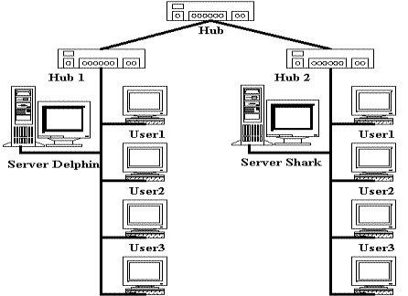

Компьютерная сеть состоит из трех основных аппаратных компонент и двух программных, которые должны работать согласованно. Для корректной работы устройств в сети их нужно правильно инсталлировать и установить рабочие параметры.
Основными аппаратными компонентами сети являются следующие:
Основными программными компонентами сети являются следующие:
ЛВС (Локальная вычислительная сеть) – это совокупность компьютеров, каналов связи, сетевых адаптеров, работающих под управлением сетевой операционной системы и сетевого программного обеспечения.
В ЛВС каждый ПК называется рабочей станцией, за исключением одного или нескольких компьютеров, которые предназначены для выполнения функций файл-серверов. Каждая рабочая станция и файл-сервер имеют сетевые карты (адаптеры), которые посредством физических каналов соединяются между собой. В дополнение к локальной операционной системе на каждой рабочей станции активизируется сетевое программное обеспечение, позволяющее станции взаимодействовать с файловым сервером.
Компьютеры, входящие в ЛВС клиент – серверной архитектуры, делятся на два типа: рабочие станции, или клиенты, предназначенные для пользователей, и файловые серверы, которые, как правило, недоступны для обычных пользователей и предназначены для управления ресурсами сети.
Аналогично на файловом сервере запускается сетевое программное обеспечение, которое позволяет ему взаимодействовать с рабочей станцией и обеспечить доступ к своим файлам.
Рабочая станция (workstation) – это абонентская система, специализированная для решения определенных задач и использующая сетевые ресурсы. К сетевому программному обеспечению рабочей станции относятся следующие службы:
клиент для сетей;
служба доступа к файлам и принтерам;
сетевые протоколы для данного типа сетей;
сетевая плата;
контроллер удаленного доступа.
Рабочая станция отличается от обычного автономного персонального компьютера следующим:
Для подключения ПК к сети требуется устройство сопряжения, которое называют сетевым адаптером, интерфейсом, модулем, или картой. Оно вставляется в гнездо материнской платы. Карты сетевых адаптеров устанавливаются на каждой рабочей станции и на файловом сервере. Рабочая станция отправляет запрос через сетевой адаптер к файловому серверу и получает ответ через сетевой адаптер, когда файловый сервер готов.
Сетевые адаптеры вместе с сетевым программным обеспечением способны распознавать и обрабатывать ошибки, которые могут возникнуть из-за электрических помех, коллизий или плохой работы оборудования.
Последние типы сетевых адаптеров поддерживают технологию Plug and Play (вставляй и работай). Если сетевую карту установить в компьютер, то при первой загрузке система определит тип адаптера и запросит для него драйверы.
Различные типы сетевых адаптеров отличаются не только методами доступа к каналу связи и протоколами, но еще и следующими параметрами:
скорость передачи;
объем буфера для пакета;
тип шины;
быстродействие шины;
совместимость с различными микропроцессорами;
использованием прямого доступа к памяти (DMA);
адресация портов ввода/вывода и запросов прерывания;
конструкция разъема.
Сервер – это компьютер, предоставляющий свои ресурсы (диски, принтеры, каталоги, файлы и т.п.) другим пользователям сети.
Файловый сервер обслуживает рабочие станции. В настоящее время это обычно быстродействующий ПК на базе процессоров Pentium, работающие с тактовой частотой 500 Мгц и выше, с объемом ОЗУ 128Мбт или более. Чаще всего файловый сервер выполняет только эти функции. Но иногда в малых ЛВС файл–сервер используется еще и в качестве рабочей станции. На файловом сервере должна стоять сетевая операционная система, а также сетевое программное обеспечение. К сетевому программному обеспечению сервера относятся сетевые службы и протоколы, а также средства администрирования сервера.
Файловые серверы могут контролировать доступ пользователей к различным частям файловой системы. Это обычно осуществляется разрешением пользователю присоединить некоторую файловую систему (или каталог) к рабочей станции пользователя для дальнейшего использования как локального диска.
По мере усложнения возлагаемых на серверы функций и увеличения числа обслуживаемых ими клиентов происходит все большая специализация серверов. Существует множество типов серверов.
Первичный контроллер домена, сервер, на котором хранится база бюджетов пользователей и поддерживается политика защиты.
Вторичный контроллер домена, сервер, на котором хранится резервная копия базы бюджетов пользователей и политики защиты.
Универсальный сервер, предназначенный для выполнения несложного набора различных задач обработки данных в локальной сети.
Сервер базы данных, выполняющий обработку запросов, направляемых базе данных.
Proxy сервер, подключающий локальную сеть к сети Internet.
Web–сервер, предназначенный для работы с web–информацией.
Файловый сервер, обеспечивающий функционирование распределенных ресурсов, включая файлы, программное обеспечение.
Сервер приложений, предназначенный для выполнения прикладных процессов. С одной стороны, взаимодействует с клиентами, получая задания, а с другой стороны, работает с базами данных, подбирая данные, необходимые для обработки.
Сервер удаленного доступа, обеспечивающий сотрудникам, работающим дома торговым агентам, служащим филиалов, лицам, находящимся в командировках, возможность работы с данными сети.
Телефонный сервер, предназначенный для организации в локальной сети службы телефонии. Этот сервер выполняет функции речевой почты, автоматического распределения вызовов, учет стоимости телефонных разговоров, интерфейса с внешней телефонной сетью. Наряду с телефонией сервер может также передавать изображения и сообщения факсимильной связи.
Почтовый сервер, предоставляющий сервис в ответ на запросы, присланные по электронной почте.
Сервер доступа, дающий возможность коллективного использования ресурсов пользователями, оказавшимися вне своих сетей (например, пользователями, которые находятся в командировках и хотят работать со своими сетями). Для этого пользователи через коммуникационные сети соединяются с сервером доступа и последний предоставляет нужные ресурсы, имеющиеся в сети.
Терминальный сервер, объединяющий группу терминалов, упрощающий переключения при их перемещении.
Коммуникационный сервер, выполняющий функции терминального сервера, но осуществляющий также маршрутизацию данных.
Видеосервер, который в наибольшей степени приспособлен к обработке изображений, снабжает пользователей видеоматериалами, обучающими программами, видеоиграми, обеспечивает электронный маркетинг. Имеет высокую производительность и большую память.
Факс–сервер, обеспечивающий передачу и прием сообщений в стандартах факсимильной связи.
Сервер защиты данных, оснащенный широким набором средств обеспечения безопасности данных и, в первую очередь, идентификации паролей.
Сетевые операционные системы (Network Operating System – NOS) – это комплекс программ, обеспечивающих в сети обработку, хранение и передачу данных.
Для организации сети кроме аппаратных средств, необходима также сетевая операционная система. Операционные системы сами по себе не могут поддерживать сеть. Для дополнения какой-нибудь ОС сетевыми средствами необходима процедура инсталляции сети.
Сетевая операционная система необходима для управления потоками сообщений между рабочими станциями и файловым сервером. Она является прикладной платформой, предоставляет разнообразные виды сетевых служб и поддерживает работу прикладных процессов, реализуемых в сетях. NOS используют архитектуру клиент–сервер или одноранговую архитектуру.
NOS определяет группу протоколов, обеспечивающих основные функции сети. К ним относятся:
адресация объектов сети;
функционирование сетевых служб;
обеспечение безопасности данных;
управление сетью.
Клиент для сетей обеспечивает связь с другими компьютерами и серверами, а также доступ к файлам и принтерам.
Сетевая карта является устройством, физически соединяющим компьютер с сетью. Для каждой сетевой карты устанавливаются свои драйверы, значение IRQ (требования к прерыванию) и адреса ввода/вывода.
Протоколы используются для установления правил обмена информацией в сетях.
Служба удаленного доступа позволяет делать файлы и принтеры доступными для компьютеров в сети.
Применение многопользовательских версий прикладных программ резко увеличивают производительность. Многие системы управления базами данных позволяют нескольким рабочим станциям работать с общей базой данных. Большинство деловых прикладных программ также являются многопользовательскими.
Защита данных от несанкционированного доступа при работе в ЛВС необходима по следующим причинам:
Первый шаг к безопасности – это введение пароля. Каждому пользователю ЛВС присваивается пароль – секретное слово, известное только этому пользователю. При вводе пароля высвечиваются звездочки. Сетевая операционная система хранит информацию по всем именам и паролям (в закодированной форме), а также о правах доступа к директориям и другие атрибуты пользователей.
Еще одна возможность защиты данных заключается в ограничении доступа к определенным директориям или определенным серверам. Доступ к дискам рабочих станций выбирается посредством вкладки Управление доступом в программе Сетевое окружение. Доступ между серверами организуется посредством установки доверительных отношений между серверами.
Фрагмент вычислительной сети включает основные типы коммуникационного оборудования, применяемого сегодня для образования локальных сетей и соединения их через глобальные связи друг с другом.
Для построения локальных связей между компьютерами используются различные виды кабельных систем, сетевые адаптеры, концентраторы, повторители. Для связей между сегментами локальной вычислительной сети используются концентраторы, мосты, коммутаторы, маршрутизаторы и шлюзы.
|
 |
|
Рис. 5.1 Фрагмент сети |
Для подключения локальных сетей к глобальным связям используются:
На рис. 5.1 приведен фрагмент вычислительной сети.
Перечислить основные компоненты сети.
Как подразделяются компьютеры в сети?
Дать определение рабочей станции.
Чем отличается рабочая станция в сети от локального компьютера?
Что такое файловый сервер?
Какие бывают файловые серверы?
Какое назначение первичного контролера домена в сети?
Для чего используется вторичный контролера домена?
Что такое Proxy–сервер?
Какая информация хранится на сервере баз данных?
Достаточно ли одного сервера баз данных в сети с клиент–серверной архитектурой?
Может ли сервер баз данных и Web–сервер размещаться на одном компьютере?
Перечислить сетевое программное обеспечение рабочей станции.
Какое назначение СОС?
Перечислить наиболее известные сетевые операционные системы.
Чем различаются типы сетевых адаптеров?
Какую технологию поддерживают последние типы сетевых адаптеров?
Что такое сетевая операционная система?
Перечислить сетевое программное обеспечение и его назначение.
Для чего используется защита данных?
Что дает использование паролей и ограничение доступа?
Перечислить основные функции сетевых протоколов.
Для какой цели используется Web–сервер?
Какой сервер необходим для подключения к сети Internet?
Какое сетевое оборудование используется для связи между сегментами ЛВС?